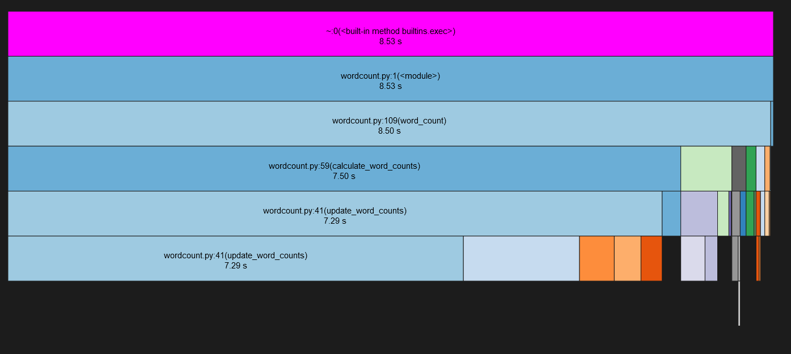

Profile
Objectives
Learn how to profile Python code using
cProfileLearn how to visualise cProfile results using
SnakeVizExamine the most most expensive function call via
line_profiler
Instructor note
Using cProfile to investigate performance
While %timeit can provide good benchmarking information on single lines or single functions,
larger codebases have more complex function hierarchies which require more sofisticated tools to
traverse properly. Python comes with two built-in tools
to profile code, which implement the same interface: cProfile and profile.
These tools can help to identify performance bottlenecks in the code.
In this lesson, we will use cProfile due to its smaller overhead (profile, on the other hand,
is more extensible). The standard syntax to call it is:
$ python -m cProfile [-o <outputFile>] <python_module>
By default, cProfile writes the results to stdout, but the optional -o flag redirects
the output to file instead. A report can be generated using the pstats command.
Type-Along
Let’s profile the wordcount script and write the results to a file.
The %run magic supports profiling out-of-the-box using the -p flag. The script can be run as:
In [1]: %run -p -D wordcount.prof source/wordcount.py data/concat.txt processed_data/concat.dat
*** Profile stats marshalled to file 'wordcount.prof'.
We can call cProfile as:
$ python -m cProfile -o wordcount.prof source/wordcount.py data/concat.txt processed_data/concat.dat
We can then generate a report using the pstats command:
$ python -m pstats wordcount.prof
# Welcome to the profile statistics browser.
# wordcount.prof% sort tottime
# wordcount.prof% stats
# Wed Sep 25 11:52:27 2024 wordcount.prof
# 53473208 function calls in 8.410 seconds
# Ordered by: internal time
# ncalls tottime percall cumtime percall filename:lineno(function)
# 1233410 4.151 0.000 7.204 0.000 source/wordcount.py:41(update_word_counts)
# 32068660 1.799 0.000 1.799 0.000 {method 'replace' of 'str' objects}
# 7747363 0.570 0.000 0.570 0.000 {method 'lower' of 'str' objects}
# 7747363 0.428 0.000 0.428 0.000 {method 'strip' of 'str' objects}
# 1530212 0.271 0.000 0.271 0.000 source/wordcount.py:23(<genexpr>)
# 1233411 0.256 0.000 0.256 0.000 {method 'split' of 'str' objects}
# 1 0.184 0.184 7.388 7.388 source/wordcount.py:59(calculate_word_counts)
# 382553 0.133 0.000 0.404 0.000 {method 'join' of 'str' objects}
# 1 0.126 0.126 0.580 0.580 source/wordcount.py:16(save_word_counts)
# ...
Discussion
Profiling introduces a non-negligible overhead on the code being executed. Thus, the absolute values for time being spent in each function should be taken with a grain of salt. The real objective lies in understanding the relative amount of time spent in each function call.
Using SnakeViz to visualise performance reports
SnakeViz is a browser-based visualiser of
performance reports generated by cProfile. It is already included among the
dependecies installed in this virtual/Conda environment.
Type-Along
SnakeViz has a IPython magic to profile and open a browser directly. To use it, we just need to load the relevant extension and run it:
In [4]: %load_ext snakeviz
In [5]: %snakeviz wordcount.word_count("data/concat.txt", "processed_data/concat.dat", 1)
Warning
This will run only if the source IPython instance has access to a local web browser.
This also means that, e.g., if you are on Windows and following the tutorial in WSL,
this will not work.
We can run SnakeViz as:
$ snakeviz wordcount.prof --server
The output will contain a clickable link containing the visualisation.

Based on the output, we can clearly see that the update_word_counts() function
is where most of the runtime of the script is spent.
Using line_profiler to inspect the expensive function
Once the main performance-intensive function is identified, we can further examine it
to find bottlenecks. This can be done using the line_profiler tool, which returns a line-by-line
breakdown of where time is spent.
Type-Along
Let’s profile the wordcount script and write the results to a file.
The line_profiler package provides a magic to be used in IPython. First, the
magic needs to be loaded:
In [1]: %load_ext line_profiler
The script can be run with the %lprun magic, whose syntax is very close to the %run
introduced above. Notice that we have to explicitly mention which functions we want to step through
line by line:
In [5]: %lprun -f wordcount.update_word_counts wordcount.word_count("data/concat.txt", "processed_data/concat.dat", 1)
To use line_profiler from the command line, the functions to be profiled need to be explicitly marked.
For this reason, we need to import the relevant decorator at the beginning of the wordcount.py script:
from line_profiler import profile
We can now mark the update_word_counts function with the @profile decorator:
@profile
def update_word_counts(line, counts):
Profiling is performed with a script called kernprof. Its usage is the following:
kernprof -lvr source/wordcount.py data/concat.txt processed_data/concat.dat
The -l flag ensures that the function is profiled step-by-step, the -v flag
shows the result on stdout and the -r flag is used to have rich format on output.
Wrote profile results to wordcount.py.lprof
Timer unit: 1e-06 s
Total time: 12.2802 s
File: source/wordcount.py
Function: update_word_counts at line 40
Line # Hits Time Per Hit % Time Line Contents
==============================================================
40 @profile
41 def update_word_counts(line, counts):
42 """
43 Given a string, parse the string and update a dictionary of word
44 counts (mapping words to counts of their frequencies). DELIMITERS are
45 removed before the string is parsed. The function is case-insensitive
46 and words in the dictionary are in lower-case.
47 """
48 33302070 2574252.9 0.1 21.0 for purge in DELIMITERS:
49 32068660 4405499.9 0.1 35.9 line = line.replace(purge, " ")
50 1233410 392268.8 0.3 3.2 words = line.split()
51 8980773 819407.4 0.1 6.7 for word in words:
52 7747363 1457841.0 0.2 11.9 word = word.lower().strip()
53 7747363 1355462.5 0.2 11.0 if word in counts:
54 7364810 1211000.7 0.2 9.9 counts[word] += 1
55 else:
56 382553 64505.7 0.2 0.5 counts[word] = 1
Based on the output, we can conclude that most of the time is spent replacing delimiters.
Keypoints
The
cProfilemodule can provide information on how costly each function call is.Profile reports can be inspected using the
pstatstool in tabular form or with SnakeViz for a graphical visualisationThe
line_profilertool can be used to inspect line-by-line performance overhead.